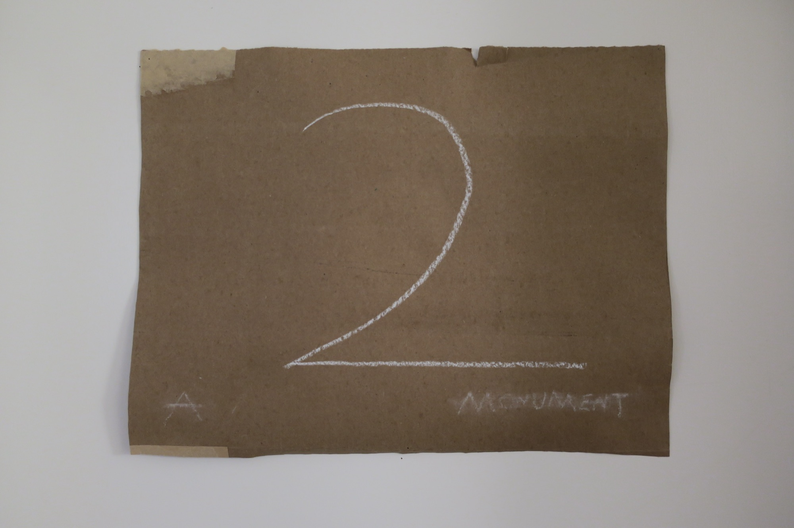
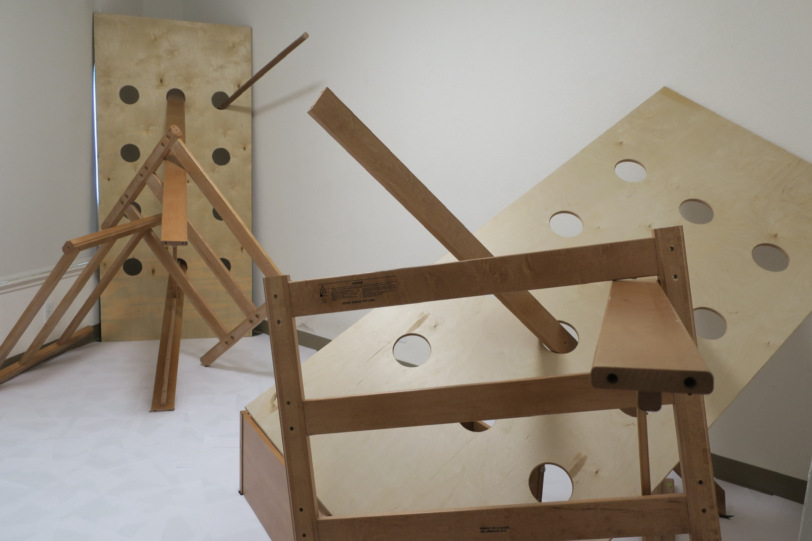
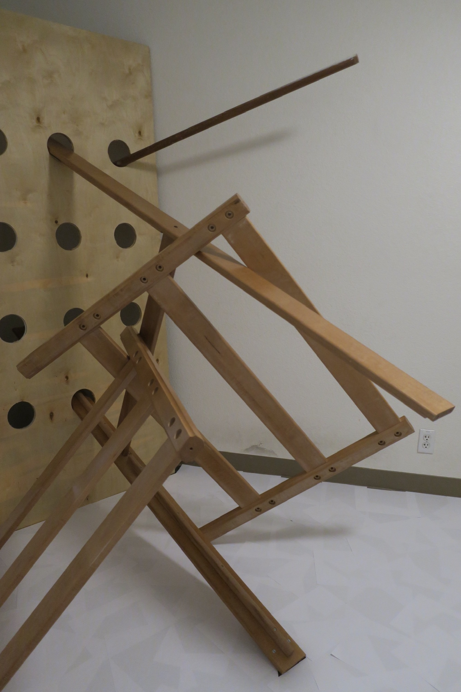
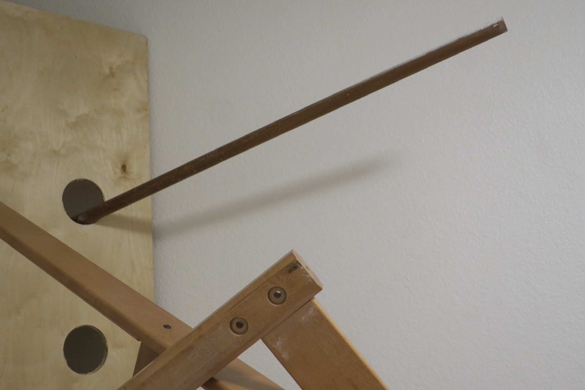
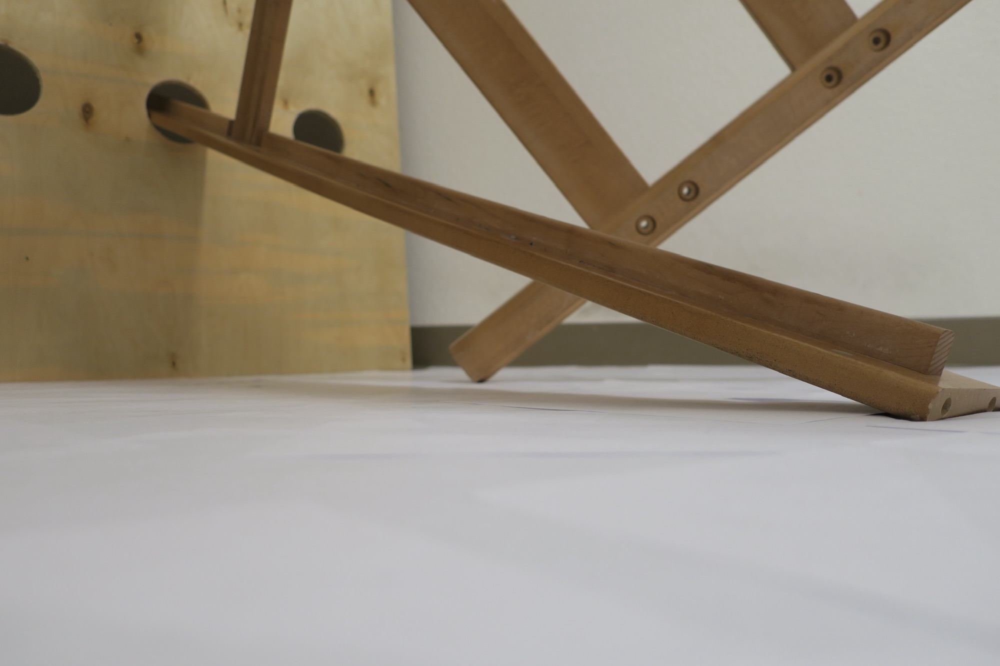
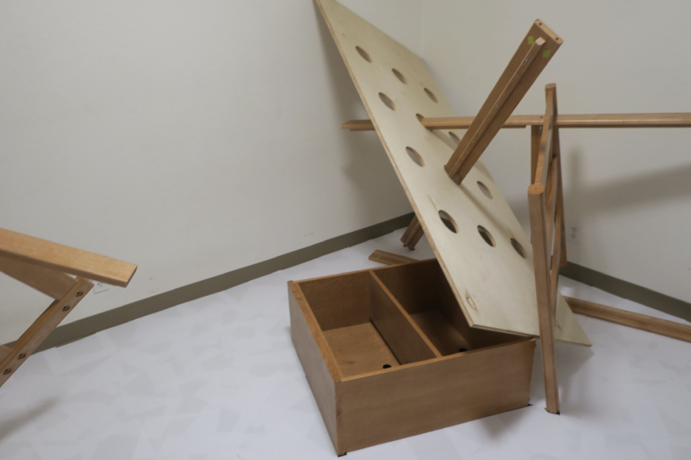
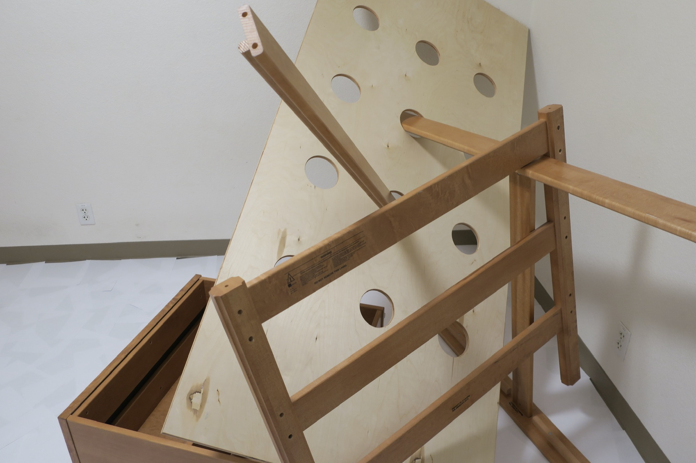
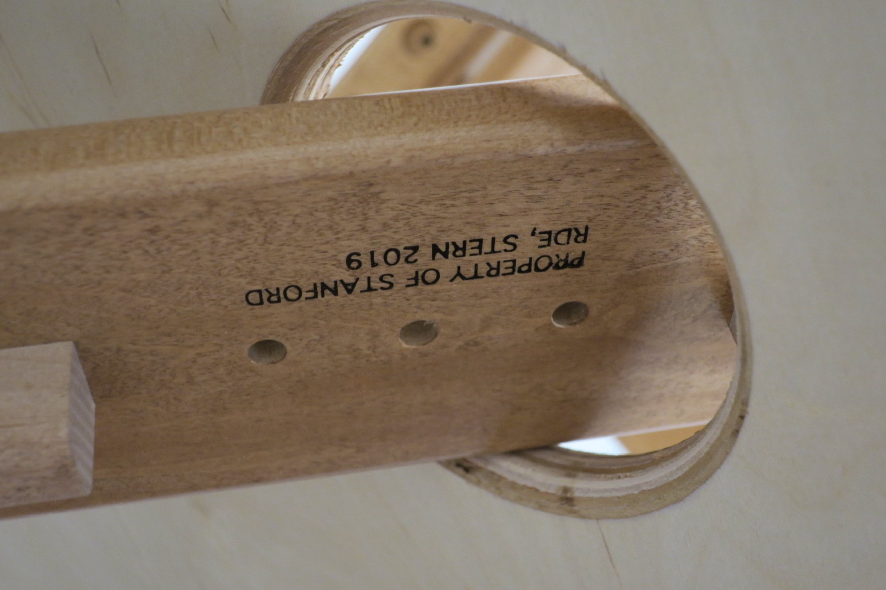

2: A Monument

After my two roommates in College left our apartment, I was compelled to make their room into a monument of their presence there. I deconstructed their beds and made sculptures out of them, each representing one of the past-tenants of the room. I covered the floor with white paper to demarcate that the room has ceased to be just a room and is now a temple, or a cloud, or a memory. It is a different space from what it used to be with different inhabitants– beds in the shape of people.
Exhibited at Room 234B Gallery, Stanford University.






